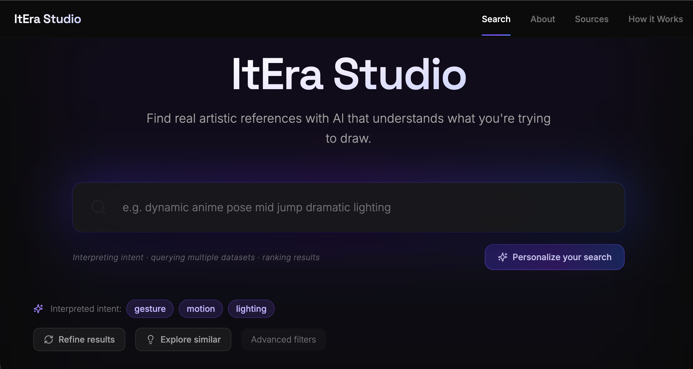

ItEra Studio
A reference search tool for artists that helps users find real, useful visual sources based on what they are trying to make. I shaped the product direction through research and designed the system around trust, intent, and ethical sourcing.
View Case Study